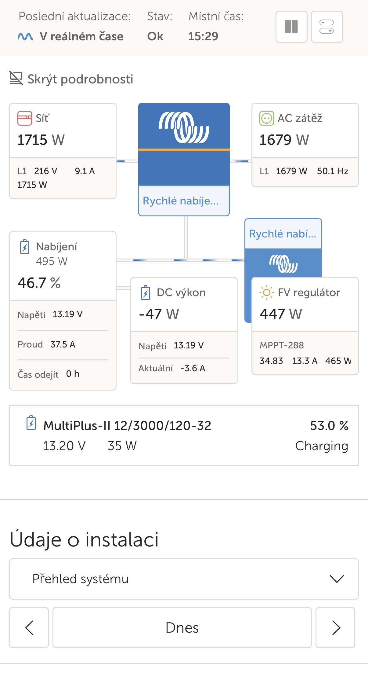
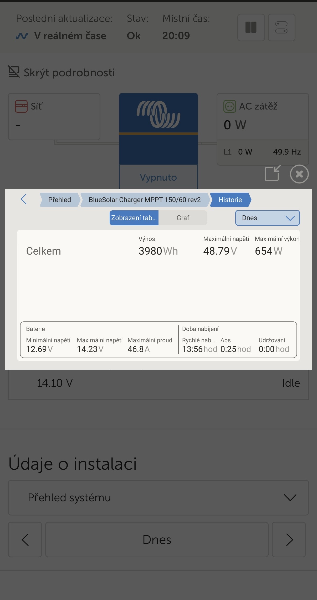
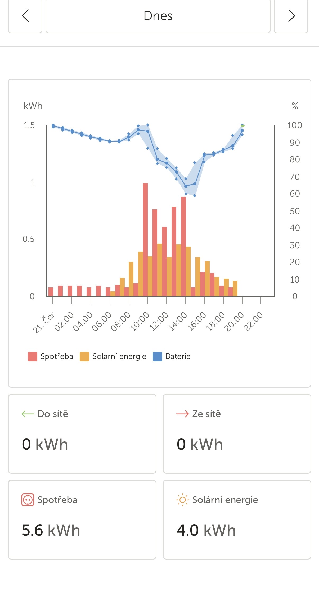

Mít velký, luxusní liner je jedna věc. Mít ale na palubě naprostou energetickou svobodu, kdy nemusíte řešit, kolik spotřebičů naráz zapnete, to je úplně jiná liga. Na naší zpáteční cestě z chorvatského ostrova Pag jsem se rozhodl dát naší palubní instalaci od Victron Energy ultimátní zátěžový test. Žádné opatrné našlapování – zkrátka čistý hardcore test všeho, co systém dokáže uřídit.
Pokud vás zajímá, jak si poradí 400 Ah LiFePO4 baterie, 3000 VA měnič MultiPlus-II, 780 Wp solárů na střeše a dvě DC-DC nabíječky za jízdy s odběrem přes 4,4 kW, vítejte u dnešního technického reportu.
Fáze 1: Ranní ostrovní očistec (klimatizace, fén a výrobník ledu)
Test začal hned po probuzení. Auto stálo kompletně odpojené od sítě, v čistém ostrovním režimu. Venku už od rána pálilo slunce, takže scénář byl jasný: posádka vyžaduje plný komfort.
Postupně se zapnulo:
- Obě střešní klimatizace (Sinclair i Dometic)
- Kávovar na ranní restart
- Výrobník ledu
- Fén na vlasy
Během dvou až tří hodin dostal systém solidní sodu a vycucal zhruba 5 kWh čisté energie. Kapacita baterie spadla k padesáti procentům. Pro 95 % běžných obytňáků by to znamenalo energetickou smrt a okamžité vypínání všeho. U nás? Jen běžné dopoledne. Regulátor MPPT už začínal chytat první silné paprsky a na obzoru byl další krok.
Fáze 2: Odpolední grilovací masakr (AC zátěž 4 446 W!)
Tohle byla ta nejšílenější pasáž, kterou jsem musel zaznamenat přes aplikaci VRM. Když jsme ještě stáli na místě a chystali jídlo, zapojili jsme elektrický kontaktní gril. K tomu běžely klimatizace a palubní zázemí. Výsledek? AC zátěž vystřelila na neskutečných 4 446 W!
Podívejte se na screenshot, který jsem v tu chvíli v reálném čase vyfotil:
Jak tenhle extrém systém uřídil přes Victron PowerAssist?
Náš měnič MultiPlus-II 12/3000/120 má trvalý papírový výkon kolem 2 400 W (3000 VA). Jak je tedy možné, že utáhl 4,4 kW a nevyletěly pojistky?
Zafungovala genialita funkce Victron PowerAssist (Asistence):
- Kempový sloupek (síť) byl záměrně omezen na bezpečný limit 7,8 A (1 682 W), aby v kempu nevypadl jistič.
- MultiPlus-II poznal, že odběr (4 446 W) je moc vysoký. Okamžitě se fázově synchronizoval se sítí a začal z baterie přes měnič „přicucávat“ zbývajících 2 895 W!
- Baterie v tu chvíli plivala krev — odběr z lithia byl šílených -256,7 A (čisté vybíjení zástavby -3 260 W). Obrovská zátěž srazila napětí baterie na 12,70 V, což je ale při takovém proudu u LiFePO4 zdravý projev vnitřního odporu. Soláry v tu chvíli dotovaly situaci svými 448 W.
Tohle byl ultimátní test kabeláže, spojů a měniče za hranicí jeho nominálního trvalého výkonu. Všechno udržel, nic neshořelo a maso se v klidu dogrilovalo. Stav baterie se ustálil na 49,8 %.
Fáze 3: Rychlá rekuperace po grilování
Jakmile se gril vypnul, systém si hluboce oddechl, což ukazuje další screenshot pořízený o pouhých 6 minut později (v 15:29).

AC zátěž spadla na 1 679 W (běžící klimy). Udělal jsem okamžitý manažerský tah — zvýšil jsem limit na sloupku na 10 A (1 715 W). MultiPlus okamžitě vypnul asistenci a přepnul se do masivního nabíjení. Napětí baterie vyskočilo zpět na zdravých 13,19 V a do baterky začal téct regenerační proud 37,5 A.
O další 3 minuty později klesla zátěž klimošek na 974 W (vnitřek už se vychladil) a volný výkon ze sítě (1 995 W / 9,3 A) spolu se soláry (445 W) vytvořil dokonalou symfonii: do baterie začal prát brutální nabíjecí proud 101 A (1 343 W)!
Fáze 4: Dálniční let s plným chlazením a síla alternátoru
A teď to hlavní — po sbalení kempu jsme vyrazili domů směr ČR. A tady přichází to nejdůležitější pravidlo: elektrický gril sice za jízdy samozřejmě neběží (bezpečnost a zdravý rozum především!), ale obě střešní klimatizace ano!
Cesta po dálnici probíhala v naprostém chládku. V kabině jela motorová klima a v obytném prostoru běžely obě střešní klimatizace naplno přes měnič z baterky. Žádná přípojka, čistá dálnice. Jak je možné, že jsme nevybili baterii?
Podívejte se na screenshot, který ukazuje denní bilanci solárního regulátoru MPPT 150/60:

- Celkový solární výnos za den: 3 980 Wh (téměř 4 kWh). Proud vzduchu na dálnici panely krásně chladil, takže i v horku soláry dosáhly maximálního výkonu 654 W.
- Tajemství úspěchu — 210A alternátor a dvě DC-DC nabíječky: Na motoru Iveca máme silný 210A alternátor. Ten krmí dvě chytře zapojené DC-DC nabíječky Victron (30 A + 50 A). Za jízdy tak do palubního systému stabilně přitékalo přes 1 010 W čistého výkonu (v aplikaci zobrazeno jako záporný DC systém -1010 W).
- Pro strach z blackoutu navíc vozím záložní elektrocentrálu, která je zapojená nezávisle přes samostatnou 50A AC-DC nabíječku přímo do baterie (mimo MultiPlus), takže v případě nouze dokáže baterii krmit čistě zespodu.
Konečné zúčtování: domů s plnou polní
Když jsme večer dorazili do ČR, vyjel jsem si z VRM portálu kompletní denní graf, který celou tu dálniční jízdu krásně rekapituluje:

- Celková spotřeba za den: 5,6 kWh (obrovské množství energie spotřebované na chlazení celého 8,35metrového auta za jízdy).
- Celkový solární zisk: 4,0 kWh.
- Bilance ze sítě: 0 kWh (čistá nula zvenčí).
Podívejte se na tu modrou křivku stavu baterie. Kolem 14:00 sice kvůli odběru obou klimatizací klesla na cca 60 %, ale jakmile klimy ubraly, kombinace solárů a hlavně 80A dobíjení z alternátoru dokázala i za jízdy dotlačit baterii zpět k 100 %. Dokonce i solární regulátor na konci dne stihl přejít do fáze absorpce a krásně zbalancoval články.
Závěr? Domů jsme přijeli v dokonale vychlazeném autě, vyzkoušeli jsme si extrémní 4,4kW zátěž na místě, spotřebovali přes 5,5 kWh elektřiny, a přesto parkujeme před domem s naprosto plnou, stoprocentně nabitou baterií.
Tenhle systém postavený na komponentech Victron Energy stál každý jeden haléř. Tohle totiž není obyčejný obytňák — je to nezávislá, nezničitelná elektrárna na kolech! 🚐☀️🔋
📦 Použité komponenty
- Victron MultiPlus-II 12/3000/120-32 (měnič/nabíječ s funkcí PowerAssist)
- Victron BlueSolar MPPT 150/60 (solární regulátor)
- 2× Victron 12,8 V / 200 Ah LiFePO4 (celkem 400 Ah)
- 780 Wp solární panely na střeše (sérioparalelní zapojení)
- 2× Victron Orion-Tr Smart DC-DC (izolovaná 30 A + neizolovaná 50 A)
- VRM Portal / VictronConnect (monitoring a vzdálená správa)